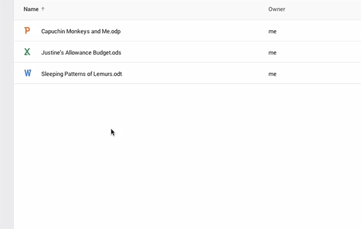

也紀念我們永遠的朋友 李士傑先生（Shih-Chieh Ilya Li）。
Google 雲端硬碟支援開放格式

在 2014 年的最後一個月，Google 做了一個令人興奮的宣佈：那就是 Google 雲端硬碟現在已經能支援開放文件格式 (OpneDocument Format, 簡稱 ODF)了！現在 Google Drive 中，文件支援 .odt 格式、試算表支援 .ods，還有簡報支援 .odp 格式，雖然開放文件格式並不只這幾種，但在辦公室文書處理中，這應該是應用範圍最廣的三項。
開放文件格式是一種基於 XML 的文件檔案格式，由於格式開放，因此不會受限於特定的廠商或是平台，創造公平、開放的環境，以避免產生「鴉片軟體」的情況。鴉片軟體是洪朝貴老師以輕鬆詼諧的筆調，暗喻軟體廠商利用封閉的格式讓使用者無法將內容攜帶至其他軟體使用，造成對特定軟體產生依賴進而壟斷市場的一種方式。雖然專有軟體有一些獨特的功能，但有可能不利於資訊的交換與長期保存讀取。
致力於推動開放文件格式的 ODF 聯盟 (The OpenDocument Format Alliance) 在 2006 年的時候成立，當年 Google 就已經加入該聯盟，但將相關格式上傳至 Google 雲端硬碟時，雖然可以下載，但卻無法像 Microsoft Office 的文件一樣進行線上預覽和編輯，用 Google 文件編輯的檔案亦無法匯出成 ODF 格式，一直到 2014 年 12 月這次的宣佈，才讓習慣使用開放文件格式的使用者歡聲叫好。
世界各國政府逐漸重視開放、開源的精神，而陸續將開源解決方案納入政府部門的標準，全世界有超過 20 個國家的公務單位或地方政府採用開放文件作為標準格式，英國也在 2014 年公告全國採用，大幅節約政府採購軟體的經費，而我國也在積極推動開放文件格式的導入。Google 此次的格式支援，相信是積極跨出開放的重要一步，但是否會有更大的進展，值得大家拭目以待。
相關連結：
You may be interested in the following articles:
- InSync 推出 Linux beta 版，在 Ubuntu 上也能同步 Google 雲端硬碟檔案 - 2012-08-13
- Google 雲端硬碟的 Linux 版本正開發中 - 2012-05-14
Special


Address：No.128, Sec.2, Academia Rd., Institute of Information Science, Academia Sinica, Nangang District, Taipei City 11529, Taiwan (R.O.C).
Privacy Policy. Terms-of-use